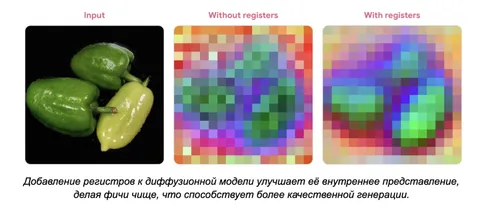

Сегодня разбираем свежую статью от команды Visual GenAI в Yandex Research на тему регистров в картиночных диффузионках.
Немного контекста
Изначально регистры придумали для визуальных трансформеров. В self-supervised-моделях вроде DINO обнаружили «артефакты»: некоторые патч-токены получали слишком высокие нормы, а CLS-токен начинал смотреть не на основной объект, а, например, на фон. Такие аутлайеры появлялись на разных слоях и портили внутренние фичи модели.
В статье Vision Transformers Need Registers нашли изящное решение: добавить к последовательности несколько пустых токенов — регистров. После прохода модели их просто выбрасывают. При этом аутлайеры переезжают из патчей в регистры, а внутренние представления становятся чище. Техника хорошо сработала на классификации, сегментации и оценке глубины и постепенно стала стандартной для self-supervised ViT.
Регистры в диффузионных трансформерах
Авторы решили проверить, что происходит с регистрами в диффузионных трансформерах. Для этого посмотрели на несколько pixel-space- и latent-space-моделей и обнаружили, что привычных для ViT аутлайеров в них нет. Нормы патч-токенов распределяются равномерно, и из-за этого кажется, что регистры диффузионкам не нужны.
Но если всё-таки добавить несколько пустых токенов, качество стабильно растёт.
При этом эффект не такой, как в ViT. В обычном визуальном трансформере регистры просто забирают уже существующие аутлайеры из патчей. В DiT аутлайеров изначально нет, и они появляются только после добавления регистров, причём именно в этих пустых токенах.
Зачем же DiT регистры
Авторы сделали вывод, что диффузионным трансформерам выгодно иметь аутлайеры, но без регистров их некуда поместить. В диффузионном лоссе участвуют все патчи, поэтому лосс ограничивает их нормы. Регистры же в лоссе не участвуют и становятся свободными слотами для аутлайеров.
Интересно, что после добавления регистров уменьшаются нормы самих патч-токенов, а внутренние фичи становятся чище и содержат меньше высокочастотного шума. Сильнее всего эффект на высоких уровнях шума.
Сами регистры делятся на две группы:
1) Одни содержат семантическую информацию и отвечают за разные части изображения (объект, фон или передний план).
2) Другие имеют высокую норму, но почти ничего не говорят о классе: они нужны скорее для сброса высокочастотного шума из патч-токенов.
Где регистры работают лучше
Лучше всего регистры работают в pixel space. VAE- и RAE-энкодеры уже сжимают изображение и убирают часть высокочастотного шума, делая пространство более удобным для диффузии. В пиксельном пространстве такой обработки нет, поэтому польза от регистров максимальная.
Ещё важный момент: добавлять их лучше не с первого слоя, а примерно с середины модели. На ранних слоях регистры могут набрать бесполезную информацию и протащить её дальше.
Register guidance
В результате работы исследователи предлагают решение в виде register guidance. Одна и та же модель умеет работать с регистрами и без них: вариант без регистров используют как слабую модель, от предикта которой отталкиваются при генерации. Такой guidance улучшает визуальные детали, а в сочетании с classifier-free guidance даёт прирост качества.
Код доступен на GitHub, веса моделей — на Hugging Face, а все материалы — на странице работы.
Рассказал о работе
ML Underhood
